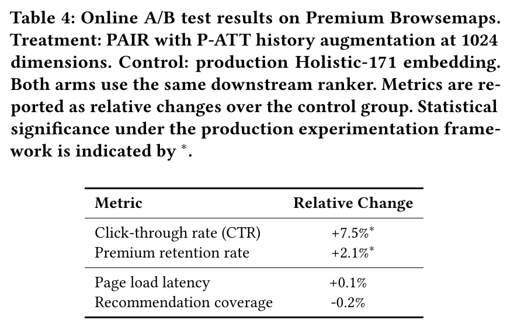

SHARE
On LinkedIn, a software engineer who starts looking for a job usually wants to open the profiles of recruiters, hiring managers and HR, not other engineers. In professional networking, "who should be recommended" is often complementary, not similar. Yet most recommender systems work on "the more alike two profiles are, the more one should be recommended", so they keep showing him his peers. The LinkedIn team's PAIR (Preference-Aligned Intent Retrieval) changes the training goal: instead of learning "who resembles whom", it learns from real logs "which of the people shown did the user click". In offline tests, PAIR's ability to find the people a user will actually click is 56% higher than the model LinkedIn currently runs in production. In a live comparison experiment, clicks on recommendations rose 7.5%, paid-member renewals rose 2.1%, and pages did not get slower.
![PAIR's three "towers" (parallel encoding modules): the two on the left share one model and turn the profiles of the querying user and of each candidate into vectors; the history tower on the right takes a weighted average of the vectors of the last 10 people the user clicked, standing for whom he is looking for right now; finally "who this person is" and "whom he wants now" are added to give the query vector used for search. When history changes only the weighted average is recomputed; the large model does not run again.](../../../figs/2026-10-25/personalization/2610.30941/hf1.png)
1. The problem: professional recommendations are not about finding "similar people"
The paper targets Premium Browsemaps, LinkedIn's "people you may want to meet" module for paying members (Premium), shown next to other people's profiles. Visits it generates turn into notifications such as "who viewed your profile", which users use to judge whether paying is worth it, and that affects renewals.
This module's recommendations happen in two steps: the first is called "retrieval": narrow the pool by region, industry, seniority and language, then quickly pull out about 100 people who may fit. The second is called "ranking": a finer model picks the 4 that are finally shown from those 100. Anyone retrieval misses cannot be recovered by ranking, however good, so retrieval sets the ceiling.
Retrieval relies on "vectors". The system turns each person's profile into a string of numbers; people with similar profiles get similar numbers, and the search returns those closest to the querying user. This assumes "alike means relevant". But in professional networking, job seekers want people who hire, business developers want potential clients, and recruiters want candidates whose skills fill a gap, none of whom are people like themselves.
Changing this at LinkedIn's scale faces two engineering limits. First, what kind of person a user wants changes: actively job hunting this week, perhaps just networking next month. Re-running a large model over hundreds of millions of profiles every time user behaviour changes is impossible in production. Second, different recommendation surfaces have different needs for speed, memory and storage, so ideally one model can output vectors of different lengths.
2. Method one: teach the model with people who were "seen but not clicked"
Training data comes from Premium Browsemaps' past production logs. In each recommendation shown, the person the user clicked is the "positive", i.e. someone the model should rank higher. Each positive is paired with 3 "negatives", i.e. people who should rank lower. Negatives are taken first from people seen in the same display but not clicked. If there are fewer than 3, the rest are filled at random from active paying members who were not shown.
This choice of negatives is the key to the paper. If a user saw A and B on the same screen and clicked only A, that directly tells you whom he preferred under similar conditions. A random stranger carries no such information; the model can easily separate them from the positive and learns little.
The training goal is simple: pull the querying user's vector closer to the clicked person and push it away from the 3 who were not clicked. The authors mention that at first they fine-tuned with the usual method, which beat the off-the-shelf model, but the model was still learning "alike or not": job-seeking engineers were still recommended other engineers. Only after switching to "seen but not clicked" negatives did this clearly improve.
This approach has a cost, which the authors state themselves. The model can only learn preferences among "people who were once shown"; it learns nothing about people the old system never showed. So the old system's leanings are carried into the new model. The authors think future work could deliberately show some new candidates to gather fuller feedback.
3. Method two: separate "who this person is" from "whom he wants now"
To reflect the user's current intent without running a large model again and again, PAIR splits the query vector into two parts.
The first part stands for "who this person is". The profile, including headline, summary, work history, education, skills and certifications, is arranged into a passage of text and turned into a vector by a 600-million-parameter text embedding model (Qwen3-Embedding-0.6B). Candidates' profiles go through the same model, and every profile is computed offline in background batches rather than when a user arrives.
The second part stands for "whom he wants now", and is set by the last 10 people the user clicked. Their vectors were already computed offline; they only need a weighted average. How the weights are split is learned during training and depends mainly on two things: more recent clicks count more, and some profiles naturally say more about intent. The authors deliberately made the weights independent of the querying user's own profile. So each time the user clicks one more person, only the weighted average of these 10 vectors is recomputed, on an ordinary CPU, without running the large model. Weights that varied with the querying user would be a bit more expressive, but then both parts would have to be computed together online, making serving much more complex.
Before the two parts are added, each is scaled to the same length; otherwise the one with bigger numbers would drown out the other. The history part is also multiplied by a learned factor, so the model decides for itself how much to listen to "recent behaviour".
The last design lets one model output vectors of different lengths. During training the first 200, 256, 512 and 1024 numbers of the vector are all required to work on their own; this is Matryoshka training. In production each surface just cuts off the length it needs, with no separate model per surface. The length 200 was chosen to take about the same storage as the production model (171 numbers).
4. How the experiments were run
The data is split by time: earlier logs for training, 209,000 queries covering 4.4 million distinct profiles; later logs for testing, 11,800 queries covering 93,000 profiles. Splitting by time mimics reality: the model can only learn from the past and then predict the future.
The main metric is called MAR@k (mean average recall; k is how many top places are counted). Each querying user gets a fixed pool of 100 candidates, mixing people he actually clicked with others; after the model ranks the 100, the metric checks how many of the clicked people land in the top k. Note that the paper gives only this one-line definition of MAR@k. With a pool of exactly 100 people, the top 100 always contain every clicked person, so a plain "recall in the top 100" would be 1, and 0.45 cannot mean that. The name (Mean Average Recall) suggests averaging the recall over every cutoff from 1 to k, which rewards ranking clicked people higher, but the paper does not say. So MAR@k below is only good for comparing models, not for reading as "the share of people found". The authors also report an easier metric: among 4 people, 1 clicked and 3 not, can the model put the clicked one first. Random guessing already hits 25%. Every improved version scores over 96% on it, so it no longer tells models apart, and the main focus is MAR@k.
There are three points of comparison: Holistic-171, LinkedIn's general member vector in production (171 numbers, trained for several business goals at once); the same 600-million-parameter model with no fine-tuning; and variants of PAIR.
5. Results
| Model | MAR@25 | MAR@100 |
|---|---|---|
| Holistic-171 in production | 0.169 | 0.288 |
| 600M-parameter model, not fine-tuned | 0.100 | 0.192 |
| PAIR, without recent clicks | 0.255 | 0.436 |
| PAIR, recent clicks as a simple average | 0.253 | 0.430 |
| PAIR, recent clicks with learned weights | 0.265 | 0.450 |
Three points stand out in this table.
First, most of the gain comes from training on "seen but not clicked". PAIR without recent clicks already goes from 0.288 to 0.436, about 51% better. The same model without fine-tuning scores only 0.192, worse than production, which shows that a bigger model alone does not help; what matters is learning the right goal.
Second, adding recent clicks brings only a small extra gain, from 0.436 to 0.450, 3.2% more in relative terms. And how it is added matters: a simple average is actually a little worse than adding nothing (0.430). Several other common ways tested in the paper, such as taking the maximum or weighting without regard to order, also fall short of adding nothing. The authors therefore see the history part's value mainly as "keeping up with user intent cheaply once deployed", not as a big jump in accuracy.
Third, the gain is not bought with longer vectors. Cut to 256 numbers, the same model reaches a MAR@100 of 0.432, with a quarter of the full storage and about 0.4 times the search time, still far above production's 0.288. So PAIR's advantage does not come from using more storage. Cut to 200 numbers it still reaches 0.421. The authors plan to use different lengths for different surfaces: 200 numbers for first-pass filtering, 256 for speed-sensitive surfaces, and 1024 for Premium Browsemaps itself.
The live experiment worked like this: some users got retrieval from PAIR (1024 numbers, with recent clicks), the rest stayed on Holistic-171. Both groups used exactly the same ranking model afterwards, so any difference comes only from the retrieval step. Users were randomly assigned after being stratified by subscription tier and activity.

The authors explain why a 56% offline gain became only 7.5% more clicks online. Retrieval improves only the "candidate list"; whether the user finally clicks also depends on ranking, page layout and the user's situation at the time. This is common in multi-step recommender systems.
6. Limitations and practical meaning
The authors list four limitations. The live experiment fixed the ranking model downstream; tuning retrieval and ranking together may leave room for more. The experiment looked mainly at short-term clicks and renewals; longer-term subscription effects need longer observation. How negatives are chosen is an engineering compromise; "random only", "seen-but-not-clicked only" and "mined by similarity" have not been systematically compared. Testing was done only on Premium Browsemaps; whether it carries over to email recommendations, job matching and other surfaces is unverified. And, as noted above, negatives from logs carry the old system's leanings into the new model.
For teams building recommendation retrieval, the paper offers three lessons to borrow directly. First, if your setting is two-sided or complementary matching, such as hiring, dating, business-to-business matchmaking or mentor matching, the assumption "alike means relevant" may not hold. Training on "seen but not clicked" examples is cheap, and in the paper most of the gain came from this step. Second, to follow users' real-time intent without running a large model online, you can follow PAIR and make recent behaviour a weighted average of precomputed vectors, so an update costs only a tiny computation. But first check that adding recent behavior really works better than leaving it out: in the paper several common averaging methods did worse than adding nothing. Third, when several surfaces share one model, "nesting doll" training lets one model meet different storage and speed needs without maintaining several models.
Discussion
Add experiment details, reproduction notes or a different take. Requires a GitHub sign-in.
Loading the discussion…